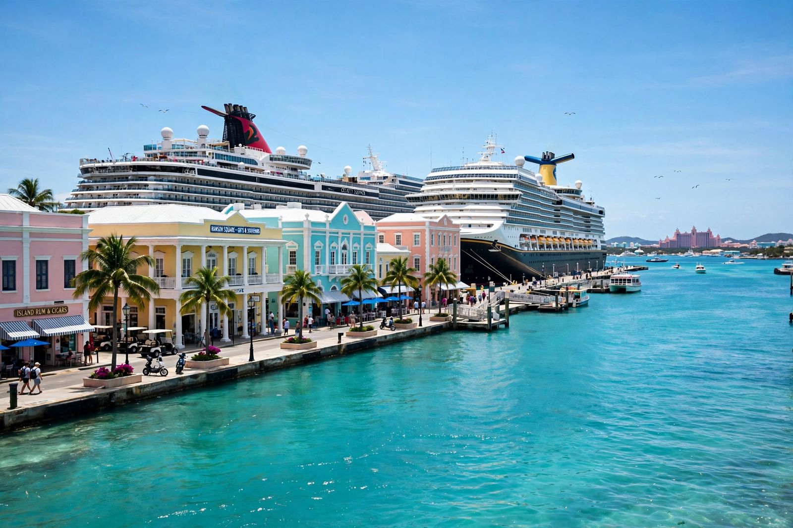

Wikipedia — the free encyclopedia
| Country | The Bahamas |
| Island | New Providence |
| Status | Capital and largest city |
| Population | About 275,000 (estimate) |

Nassau is the capital and largest city of the Commonwealth of The Bahamas, located on the island of New Providence. It contains the great majority of the country's population and its seat of government, port and commercial centre.
The town was founded by the English around 1670 as Charles Town and renamed Nassau in 1695 in honour of William of Orange-Nassau. In the early 18th century it became notorious as a base for pirates — the self-declared Republic of Pirates — until Governor Woodes Rogers arrived in 1718 to restore royal authority, an era remembered in the motto 'Expulsis Piratis Restituta Commercia' (pirates expelled, commerce restored).
Today Nassau's economy is dominated by tourism and offshore finance. Cruise ships dock at Prince George Wharf beside Bay Street's shops, the Straw Market and colonial-era buildings such as Government House and Fort Fincastle, while the Paradise Island resorts and their bridges face the harbour across the water. Cable Beach, west of the centre, is the other main resort strip.